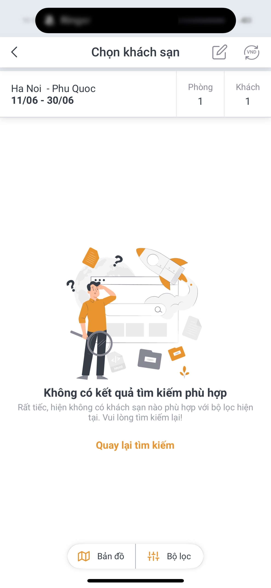
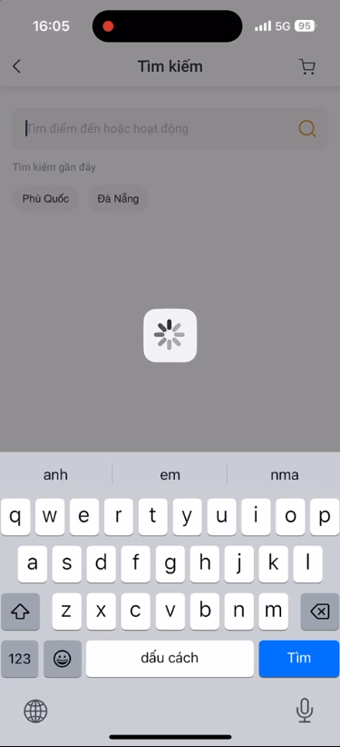

Không tìm được chuyến bay dù chọn khoảng thời gian rộng
Đây là tín hiệu khách đang linh hoạt và có ý định mua, nhưng website cũ trả về trạng thái cụt thay vì gợi ý ngày bay, khách sạn hoặc combo thay thế.
Vinpearl Booking Experience
Nhóm F2 xây dựng lớp hỗ trợ thông minh cho luồng tìm kiếm Vinpearl: hiểu nhu cầu, gợi ý bộ lọc tốt hơn, xử lý trạng thái không có kết quả và giúp người dùng luôn có bước tiếp theo để tiếp tục đặt dịch vụ.

Vấn đề từ trải nghiệm thật

Đây là tín hiệu khách đang linh hoạt và có ý định mua, nhưng website cũ trả về trạng thái cụt thay vì gợi ý ngày bay, khách sạn hoặc combo thay thế.
Khi loading kéo dài, người dùng không biết hệ thống đang xử lý gì, có nên đợi hay phải quay lại từ đầu.
Trải nghiệm cũ nói “vui lòng tìm kiếm lại”, nhưng chưa giải thích nguyên nhân và chưa đưa ra lựa chọn cụ thể để khách tiếp tục.
Sản phẩm nhóm F2 đã hoàn thành
Người dùng có thể mô tả chuyến đi bằng ngôn ngữ đời thường; hệ thống chuyển nhu cầu đó thành điểm đến, ngày đi, số khách và tiêu chí tìm kiếm.
Thay vì bắt khách tự thử nhiều lần, app đề xuất cách nới ngày, đổi resort, đổi loại phòng hoặc xem combo phù hợp hơn.
Các trạng thái loading, không có kết quả hoặc lỗi dữ liệu được biến thành màn hình có lời giải thích và hành động tiếp theo.
Sau pitch, nhóm có thể demo trực tiếp kịch bản tìm chuyến Hà Nội - Phú Quốc và cách app F2 xử lý tốt hơn website cũ.
Cách hệ thống hoạt động
Khách nhập nhu cầu: điểm đi, điểm đến, khoảng ngày, ngân sách, số phòng, số khách.
App chuyển intent thành điều kiện tìm kiếm rõ ràng để gọi dữ liệu phòng, khách sạn, vé bay.
Nếu không có kết quả, hệ thống không dừng lại mà tìm phương án gần nhất.
Khách nhận gợi ý đổi ngày, đổi resort, chọn combo hoặc thử lại khi dịch vụ bị lỗi.
F2 tốt hơn website cũ Vinpearl ở đâu?
| Tình huống | Website cũ | Giải pháp F2 |
|---|---|---|
| Không có kết quả | Hiển thị màn hình rỗng và yêu cầu người dùng tự tìm lại. | Gợi ý ngày, resort, phòng hoặc combo thay thế để khách tiếp tục. |
| Loading kéo dài | Người dùng bị kẹt, không biết nên chờ hay thoát. | Có trạng thái rõ ràng, nút thử lại và phương án fallback. |
| Tìm kiếm phức tạp | Khách phải tự lọc, tự đoán và thử nhiều lần. | AI hiểu nhu cầu và đề xuất bộ lọc gần với ý định mua. |
| Giá trị doanh nghiệp | Website chỉ phản hồi kết quả có sẵn. | App chủ động tư vấn, giữ khách ở lại và tăng cơ hội chuyển đổi. |
Luận điểm doanh nghiệp
Người dùng đã nhập điểm đến và khoảng ngày là người dùng có ý định mua. F2 giúp họ không rời khỏi phễu chỉ vì một trạng thái rỗng.
Thay vì “lỗi rồi, tìm lại”, app giải thích vấn đề và đưa ra phương án cụ thể, làm trải nghiệm giống được tư vấn bởi nhân viên thật.
Khi khách không tìm thấy lựa chọn ban đầu, F2 có thể gợi ý combo phòng, vé bay, voucher và trải nghiệm phù hợp hơn.
F2 nổi bật vì không dừng ở việc làm đẹp UI. Nhóm tập trung vào một câu hỏi kinh doanh: làm sao để khách vẫn tiếp tục đặt dịch vụ khi website cũ trả về lỗi hoặc không có kết quả?
Chuyển sang demo
Demo sản phẩm
https://suddenly-greensboro-handbook-istanbul.trycloudflare.com/
mini-hackathon-vinuni/